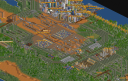
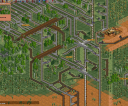
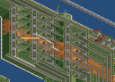

Focus on Osais-All-In-One-Station
  
After the unloading platforms, I had to split primary and secondary tier trains. Primary trains just go back to their stations, but i.e. empty goods trains should load directly goods afterwards and transport them to the northern station (the secondary tier trains are never empty idea).
Finally I mixed all trains again and joined them again to a 3-track-mainline. The final joiner is a very compact 9>3 joiner. It misses some flexibility, but the practise showed it works very well and fluid. XeryusTC added some priority lines which smoothes the train traffic.
It took me almost the whole game to build, balance and optimise this station.
So here is my little warning:


Don’t try this at home 🙂
* the number of trains is quite relative depending on the type of map and size
in this case ~65 trains entered the station per month
Categories: Community News